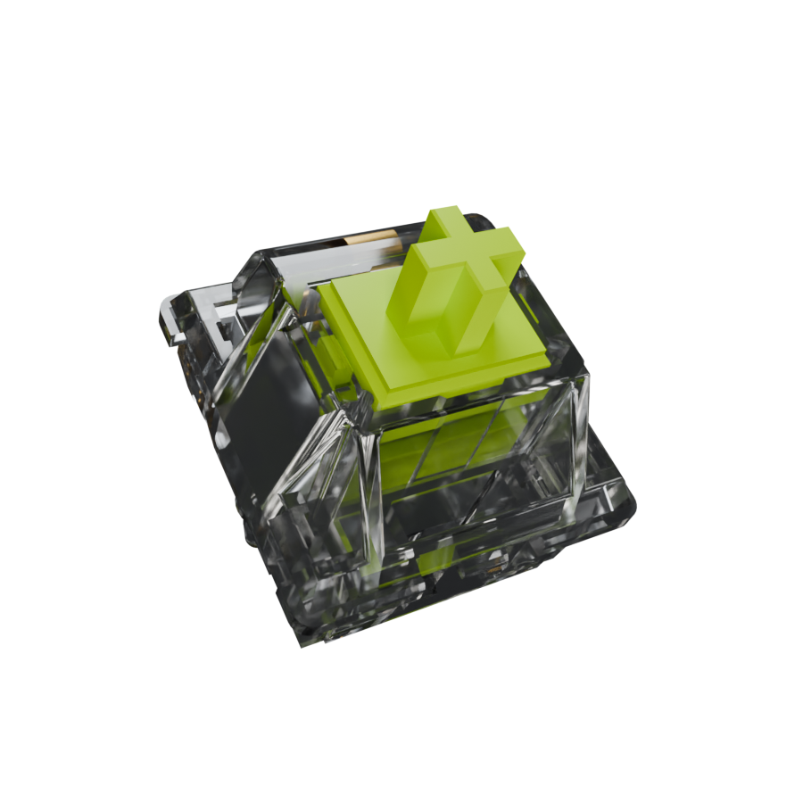
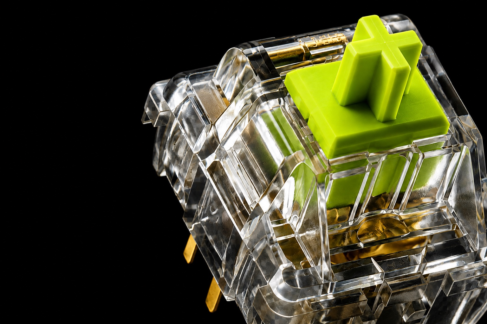

<!doctype html>
<html lang="zh-CN">
<meta charset="utf-8">
<meta name="viewport" content="width=device-width,initial-scale=1">
<title>Battuta · 离线光追样张</title>
<style>
*{box-sizing:border-box}body{margin:0;background:#090b08;color:#eef1e9;font:15px/1.6 -apple-system,BlinkMacSystemFont,sans-serif}main{max-width:1300px;margin:auto;padding:32px 24px}header{display:flex;align-items:center;justify-content:space-between;gap:24px}a{color:#caff35}h1{margin:20px 0 4px;font-size:clamp(28px,4vw,46px);letter-spacing:-.04em}p{color:#a7ae9f;margin:4px 0 16px}.layout{display:grid;grid-template-columns:1.4fr 1fr;gap:24px;align-items:center}.stage{background:#000;border:1px solid #252921;border-radius:24px;overflow:hidden}.stage img{display:block;width:100%;aspect-ratio:1;object-fit:contain}nav{display:flex;gap:10px;padding:14px;flex-wrap:wrap}button{border:1px solid #3b4233;border-radius:12px;background:#171c12;color:#e8f0dd;padding:12px 20px;font:inherit;cursor:pointer}button[aria-pressed=true]{background:#caff35;color:#101507;border-color:#caff35}button:focus-visible{outline:3px solid white;outline-offset:3px}.reference{width:100%;border-radius:16px}small{color:#98a18c}.note{padding:18px;border:1px solid #2b3324;border-radius:16px;margin-top:24px}h2{font-size:18px;margin-bottom:8px}@media(max-width:760px){.layout{grid-template-columns:1fr}main{padding:20px 14px}}
</style>
<main>
<header><strong>Battuta / MATERIAL STUDY</strong><a href="/projects/battuta/community">返回声音图鉴</a></header>
<h1>提前算好，直接看。</h1>
<p>三个离线光追角度样张 · 900 × 900 · 512 最大采样 · OpenImageDenoise</p>
<div class="layout">
<section class="stage" aria-label="离线渲染样张">

<nav aria-label="切换样张角度"><button data-file="000" data-label="初始角度" aria-pressed="true">初始角度</button><button data-file="009" data-label="旋转 45°" aria-pressed="false">旋转 45°</button><button data-file="027" data-label="旋转 135°" aria-pressed="false">旋转 135°</button></nav>
</section>
<aside><h2>材质参考</h2><div class="note"><strong>这里没有实时光追。</strong><p>图片已经在 Blender 中渲染并降噪，切换角度不会退回低质量渲染，也不需要在你的浏览器里重新采样。</p><small>当前是材质验证的三个角度，尚未生成完整旋转序列，也未替换首屏。模型结构与参考图并不完全相同。</small></div></aside>
</div>
</main>
<script>
const frame=document.getElementById('frame');
for(const button of document.querySelectorAll('button[data-file]'))button.addEventListener('click',()=>{
frame.src='frame-'+button.dataset.file+'.png';frame.alt='轴体'+button.dataset.label+'的离线光追渲染';
for(const other of document.querySelectorAll('button[data-file]'))other.setAttribute('aria-pressed',String(other===button));
});
</script>
</html>
